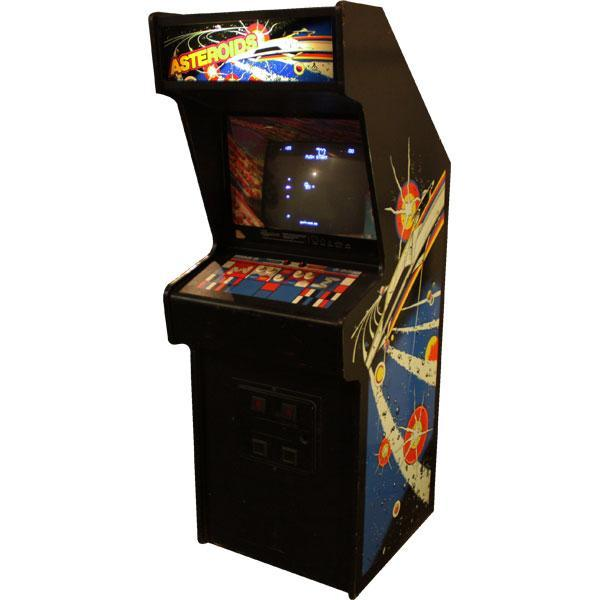

Киберспорт, или электронный спорт, это форма соревновательной деятельности, в которой игроки соревнуются в видеоиграх на различных платформах, как компьютерных, так и консольных. История киберспорта берет свое начало в конце 20 века, когда появились первые компьютерные игры и соревнования по ним.
В самом начале киберспорт представлял собой неформальные соревнования между друзьями или игроками, собравшимися вместе на местах или через сети. С появлением широкополосного интернета и онлайн-игр этот вид спорта стал набирать популярность и признание.
Одним из первых крупных соревнований в киберспорте был турнир Cyberathlete Professional League (CPL), который прошел в 1997 году в США по игре Quake. Этот турнир стал масштабным событием, привлекая внимание множества игроков и зрителей.
Со временем киберспорт стал все более организованным и профессиональным. Появились специализированные команды, тренеры, менеджеры, а также крупные спонсоры и турниры с многомиллионными призовыми фондами.
Предпосылки к возникновению виртуального спорта зародились еще до эпохи Интернета.
Первый публичный киберспортивный турнир состоялся в США в октябре 1972 году. Преподаватели и студенты Стэнфордского университета собрались в лаборатории изучения искусственного интеллекта, чтобы посоревноваться в игре Spacewar – одной из первых цифровых видеоигр, смысл которой заключался в том, чтобы маневрировать космическим кораблем, пытаясь уничтожить корабль соперника.
Турнир включал одиночный зачет, командные 2×2 и FFA (каждый сам за себя) режимы, игроки состязались на игровых автоматах.
Победителем считался тот игрок или команда, который набрал наибольшее количество очков. В аппаратах был встроен рейтинг, поэтому каждый так или иначе стремился оказаться в списке лучших.
В 1981 году бизнесмен Уолтер Дей стал первым, кто организовал учет истории игровых достижений американских игроков в компьютерные игры. А в 1983 году он собрал собственную команду, менеджером которой выступал на различных игровых турнирах. Благодаря активному участию Дея появилось также ТВ-шоу о виртуальном спорте.
Локальные компьютерные сети дали крупный толчок развитию киберспорта, ведь у игроков появилась возможность напрямую соревноваться друг с другом. До этого спортсменам приходилось играть по очереди, а победителя определяло количество заработанных очков. Теперь же соревнования перешли на качественно новый уровень.
Огромную роль в истории компьютерного спорта сыграло создание культовых видеоигр 90-х:
Но большинство турниров еще оставалось местным либо региональным развлечением. В 1996 году на первый турнир QuakeCon от id Software (американская компания-разработчик компьютерных игр) пришло только 40 человек. Начиная с этого периода соревнования на PC (персональных компьютерах) начали активно продвигать. Это не оставило игроков и болельщиков равнодушными.
В 1999 году в США была зарегистрирована первая в мире киберспортивная организация — Evil Geniuses.
Первый турнир The International, организованный компанией Valve в 2011 году, оживил индустрию. При поддержке разработчиков видеоигр сформировалась Лига из небольших, но регулярных соревнований. Призовые суммы были скромные, но киберспортсмены наконец-то смогли получать постоянный доход.
Сейчас трансляции The International и турниров по Counter Strike собирают миллионы зрителей.
В России история киберспорта началась в 70-х годах с появлением игровых автоматов.
В начале 90-х мало кто из россиян мог похвастаться наличием персонального компьютера, зато почти в каждом доме можно было встретить игровую консоль или приставку Dandy. Она являлась аппаратным клоном приставки третьего поколения Famicom японской компании Nintendo. Dandy представляла собой систему управления с проводами для подключения к телевизору, картриджи с играми и контроллеры «джоистики», с помощью которых можно было управлять тем, что происходит в игре. Именно по Dandy проходили первые соревнования в местных игровых клубах. После Dandy появились другие популярные консоли, на которых проходили соревнования, например такие как: Sega Mega Drive, Sony Playstation и другие.
С появлением в конце 90-х в России компьютерных клубов началось и формирование первых игровых команд, стали организовываться соревнования.
В 2000 году в России появилась Федерация компьютерного спорта (ФКС). В 2017 году был организован Кубок России сразу по нескольким играм:
Общая сумма денежных призов составила 7 миллионов рублей.
За более чем 20 лет работы на счету ФКС России более 1000 проведенных турниров с участием свыше 500 тысяч игроков. Среди крупнейших соревнований: Чемпионат России по компьютерному спорту (20 тысяч участников в 2022 году), Кубок России по киберспорту (свыше 26 тысяч участников в 2019 году), Всероссийская киберспортивная студенческая лига (более 250 вузов-участников в сезоне 2019-2020 гг.) и Чемпионат России по компьютерному спорту.
Кроме организации турниров, ФКС занимается набором киберспортивных команд, обучением тренеров и судей и продвижением киберспорта.
Отделения ФКС открыты почти во всех регионах страны.